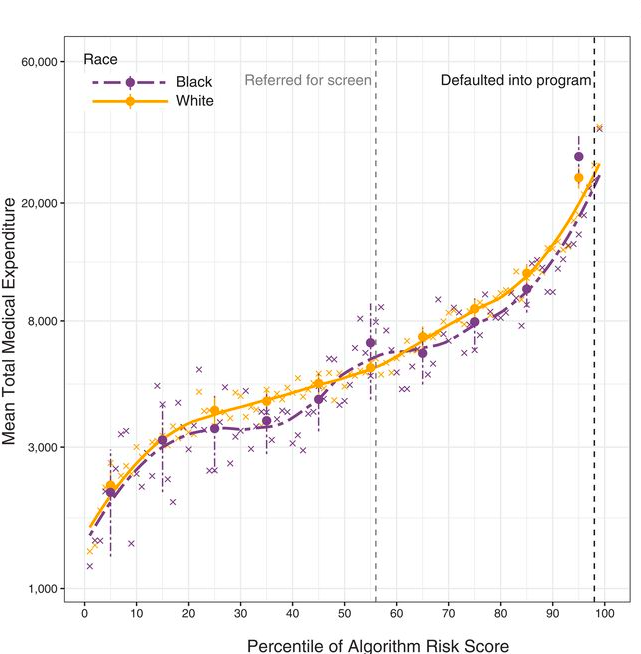
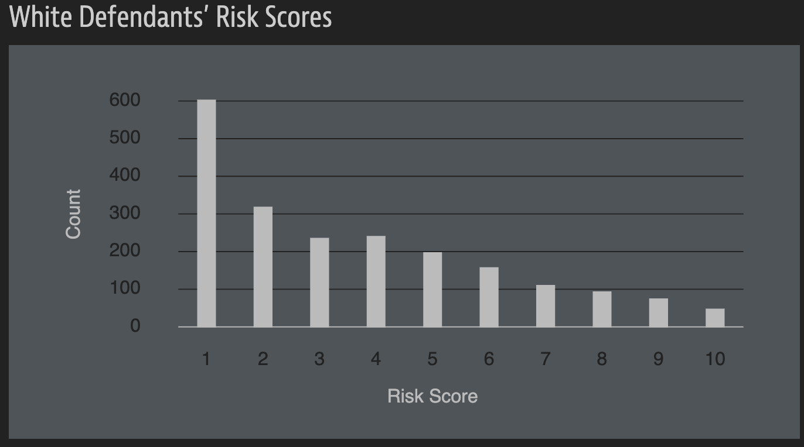
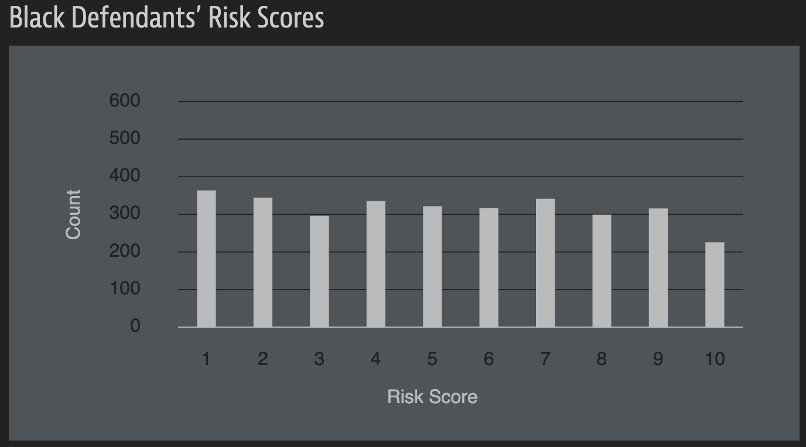

Data ethics
3/12/25
Housekeeping
- Midterm 1 tomorrow! Bring a fully charged laptop!
- Extra office hours today 3:15-4:15pm
- Lots of material comes from Modern Dive and Dr. Shannon Vallor’s module “An Introduction to Data Ethics”
What is ethics? Why discuss?
- Philosopher Socrates is quoted as saying that “the most important thing is not life, but the good life”1
- Questions of ethics attempt to answer the question: What is a life worth living?
- Ethics involves human choice, and goes beyond “intent”
- Ethics enters politically, personally, and professionally
- Professional ethics describes the standard of behavior expected of workplace professional (depends on the field)
- Questions of technological and data ethics are emerging due to speed at which these fields are growing
- Technology increasingly affects how and how successfully humans are seeking the “good life”
Ethical benefits and harms of data?
Data does have benefits for society! What are some?
Increasing human understanding of our world
Can lead to more efficient use of resources
Predictive accuracy and personalization
Data does have harms for society! What are some?
Harms to privacy and security, lack of consent
Harms to fairness and justice
- Biases arise from falsehood, sampling errors, and discriminatory practices
Harms to transparency and autonomy
- “Black box”/“deep learning” algorithms, proprietary software
Many harms are implicit (which makes them hard to mitigate!)
Ethics in technology and data
Technologies are not ethically “neutral”–they are built and informed by humans, and so they naturally reflect the values and biases that humans have
Have you heard of the term “big data”? If so, what does it mean to you?
“Big data” is more than just the explosive growth of large datasets!
- It involves the ways/techniques that these large datasets are stored, processed, and analyzed
- Humans enter at these steps!
What can you do?
With this class, you should learn to make visualizations and tables that are factual and not intended to deceive your audience
- You can and should tell stories with your visualizations, but you should not purposefully hide or distort important aspects of the data (e.g. outliers, omit confounders, only display results that confirm your hypothesis)
Don’t lie with statistics!
Make all your work reproducible, and open-source (i.e. public)
Example 1: stand your ground
In 2005, the Florida legislature passed a controversial “Stand Your Ground” law
The law allowed for a broader class of scenarios where the use of deadly force by citizens could be justified
Proponents of the law thought it would reduce crime
Opponents worried it would increase the amount of lethal force
Example 1: stand your ground (cont.)
Nine years later, in 2014, Reuters published a graphic similar to the one below1:

What is the story the figure is trying to tell?
Is it factually correct?
Is it deceptive?
Example 2: COVID-19 reporting
In May 2020, the state of Georgia published the following graphical display of COVID-19 cases:

What is the story the figure is trying to tell?
Is it factually correct?
Is it deceptive?
Data viz worst practices
Don’t do the following:
- Use misleading scales
- Cherry-pick the data/only visualize specific data points
- Have ambiguous legends/labels
- Use colors that convey a bias
- Fail to explain your methods
Algorithmic bias
Less a feature of this course, but important to keep in mind if/when you progress further in statistics, data science, and computer science!
- Often related to lack of transparency
- Algorithms have to be “trained” on data.
- Garbage in, garbage out
Example 3: health care recommendation
- Goal: identify patients for “high-risk care management” programs that seek to improve the care of patients with complex health needs by providing additional resources
- Such programs are considered effective at improving outcomes and satisfaction while reducing costs
- But these programs are themselves costly -> want to identify patients who have the highest “medical need”
- Algorithm’s designers used previous patients’ health care spending as a proxy for medical need
- Assigned patients a “risk score”, where higher risk meant more complex needs and therefore priority
- Patients with highest risk scores automatically qualified for program
- Patients with lower (but still high) risk scores were interviewed for potential candidacy
Example 3: health care (cont.)
Interpret the plot1.
What do you notice happened?

Example 3: health care (cont.)
Discuss what’s going on in these two new plots. Then use them to explain the results of the algorithm.


Example 4: COMPAS and ProPublica analysis1
Famous case study of algorithmic bias!
For more than 7,000 people arrested in Broward County, Florida in 2013 and 2014, “risk scores” were assigned via an algorithm that were used to predict the likelihood of the person committing a future crime
- Intention of algorithm’s designers: higher risk scores should accurately predict if someone will be charged with a future crime
To determine accuracy of the risk scores, these people were tracked over the next two years to see if they were charged with new crimes
Who might want such risk scores? How might they be used?
Example 4: ProPublica (cont.)
Distribution of risk scores:


- Lets’s now see how the algorithms performed
Example 4: ProPublica (cont.)
Only 20% of those predicted to commit violent crimes actually did
Algorithm had higher accuracy (61%) when full range of crimes taken into account (e.g. misdemeanors)

Black defendants were more likely to be falsely flagged as “higher”/future criminals, and at almost twice the rate as White defendants
White defendants mislabeled as “low risk” more often than black defendants
Are risk scores inherently bad?
Example 5: facial criminal prediction
Activity borrowed from Prof. Chodrow in CS department.
In 2016, researchers Xiaolin Wu and Xi Zhang published a paper detailing an algorithm that predicted whether an individual is likely to commit a crime in the future, based only on a picture of their face
- According to the paper, their algorithm was “very accurate” (details beyond this course)
Read Section 2 of the paper and answer the following questions:
- How were the data obtained?
- What would be the “explanatory” and “response variables”? Are the values of the response variables directly observed, or inferred?
Example 5: facial criminal prediction (cont.)
Now look to Figure 1 from the paper. What do you notice? What questions might you have?
The authors’ algorithm identified certain features of the face that were highly predictive of criminality, including
the curvature of upper lip
the distance between two eye inner corners
the angle enclosed by rays from the nose tip to the two corners of the mouth
One possible explanation is that these features are expressions of genetic markers that are also associated with criminality. Can you suggest another possible explanation?
Example 6: race prediction
Imai and Khanna (2016) built a racial prediction algorithm using a Bayes classifier trained on voter registration records from Florida and the U.S. Census Bureau’s name list.
Their algorithm takes in a list of last names (and optionally their home address) and returns predicted probabilities for a person’s race.
In addition to the publishing the paper detailing the methodology, the authors published the software for the classifier on GitHub under an open-source license.
Example 6: race prediction (cont.)
library(tidyverse)
library(wru) # uses 2020 census data by default
names <- data.frame(surname = c("Tang", "Lyford", "Peterson", "Flores", "Malcolm"))
predict_race(voter.file = names, surname.only = TRUE) %>%
select(surname, pred.whi, pred.bla, pred.his, pred.asi, pred.oth) |>
kable(digits = 3)| surname | pred.whi | pred.bla | pred.his | pred.asi | pred.oth |
|---|---|---|---|---|---|
| Tang | 0.018 | 0.004 | 0.011 | 0.932 | 0.035 |
| Lyford | 0.927 | 0.001 | 0.025 | 0.013 | 0.034 |
| Peterson | 0.803 | 0.103 | 0.029 | 0.009 | 0.056 |
| Flores | 0.039 | 0.004 | 0.919 | 0.025 | 0.013 |
| Malcolm | 0.613 | 0.302 | 0.026 | 0.006 | 0.054 |
What might this algorithm be useful for? What are some questions you have about it? Is it ethical to use this software? Does your answer change depending on the intended use? Does it matter that the software is open-source?